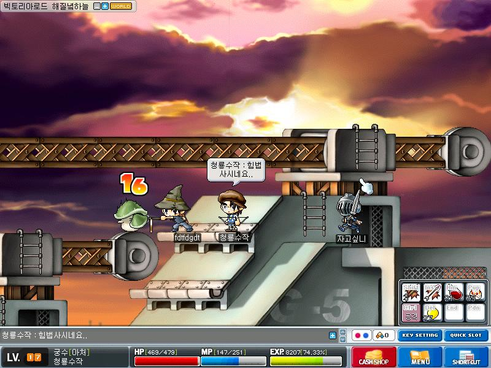
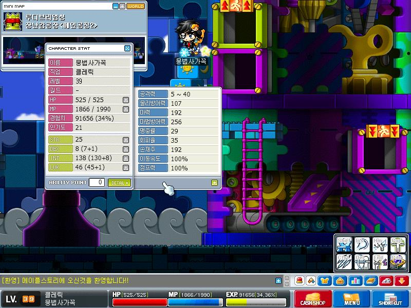
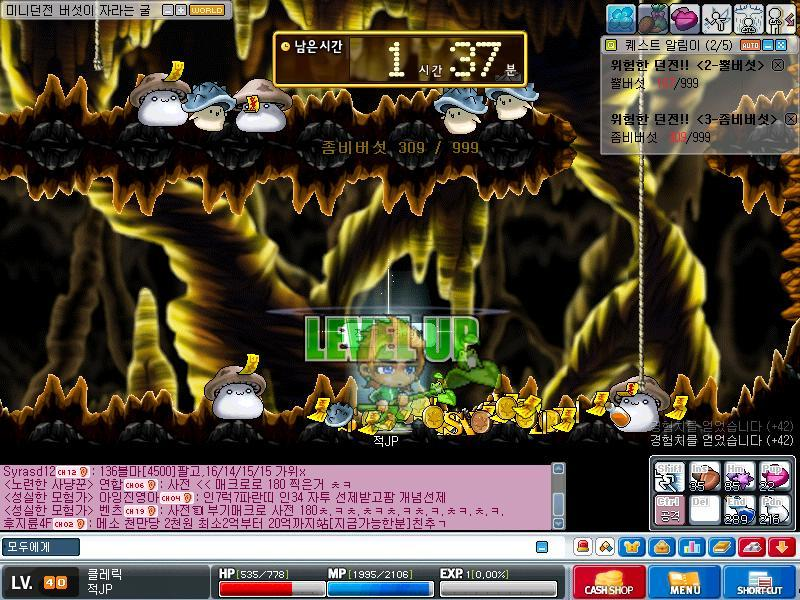

힘법사는 능력치를 힘에 투자하고 평타질을 하는 마법사이다.
style="margin-top:200px"
물약값에 허덕이던 마법사들이 힘과 덱스를 찍어 평타 사냥을 한 것에서 유래된 힘법사.
초기에는 힘과 덱스를 찍은 클레릭 직업이 버프로 자신을 강화하고 평타질을 하는 초보자와 다름 없는 형태였다.
아래에 나온 유저들이 바로 힘법사의 원형인 올힘법사이다.

이런 형태로 육성을 할 경우, 초보자처럼 고레벨 몬스터를 잡는 데에 한계가 있었다.
그도 그럴것이, 물리공격력에 영향을 받는 공격 스킬이 하나도 없었기 때문.
그래서 초보자와 같이 성장 속도가 매우 느렸고, 변태적인 육성 방식 취급을 당했다.
일부 유저는 불/독 위자드 혹은 썬/콜 위자드로 전직하여 적을 느려지게 만드는 슬로우스킬을 필두로 한 평타사냥을 하기도 했지만, 효율이 좋지 못했던 것은 매한가지였다.
style="margin-top:200px"
2007년, 마르디아의 초보자 랭커 미타니워커는 고민했다. 힘법사를 육성하는 방식이 올힘법사밖에 없단 말인가?
그랬던 그의 머릿속을 지나간 스킬이 있었으니...
바로 불독법사의 3차 스킬 포이즌 미스트였다.
독안개를 뿌려 적에게 중독 데미지를 입히는 포이즌 미스트는 시전 시에 뜨는 데미지만 인트의 영향을 받았고, 이후에 발생하는 중독 데미지는 오로지 몬스터의 체력에 비례해 떴다.
포이즌미스트를 마스터레벨인 30레벨까지 올렸을 경우, 1초당 몬스터의 체력의 1/40의 데미지가 40초간 들어왔고, 끝내 몬스터의 체력을 1로 만들었다.
이 상태의 몬스터는 1이든 100이든 MiSS만 뜨지 않는다면 잡을 수 있기에, 고레벨 몬스터를 중독시켜 힘평타로 잡는다는 발상을 한 것.
이 기묘한 육성 방식을 이용한 미타니워커는 힘법사 최초로 4차 전직을 하기에 이른다.